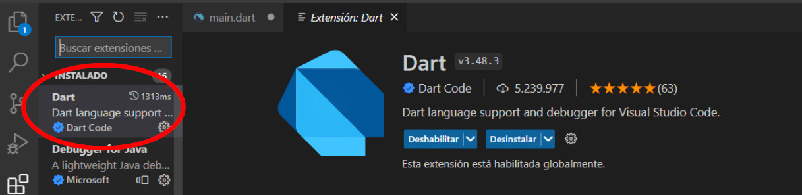
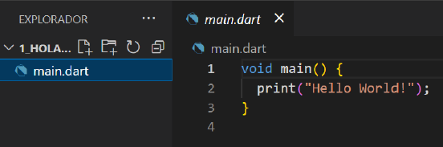
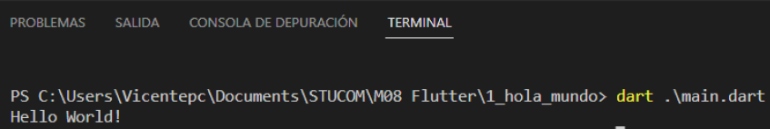
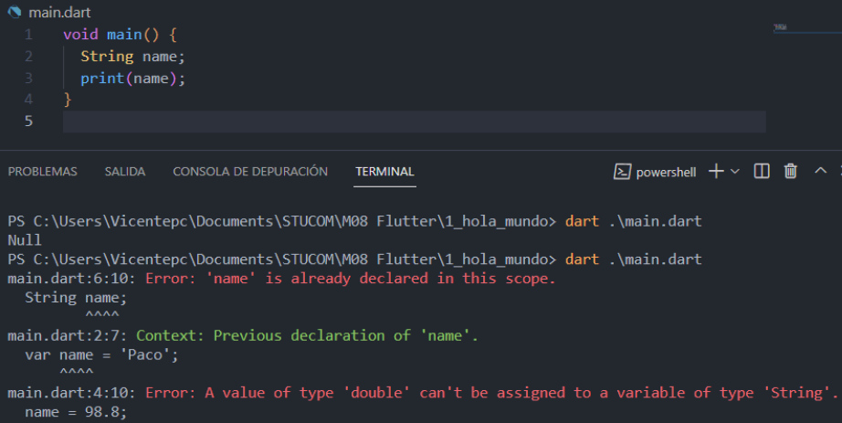
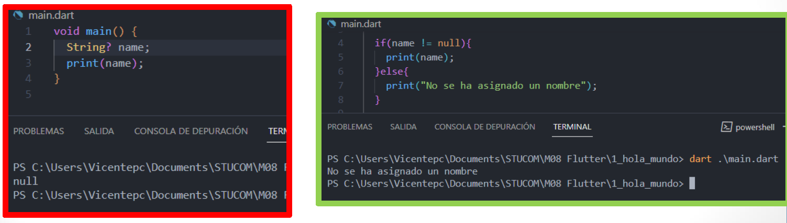
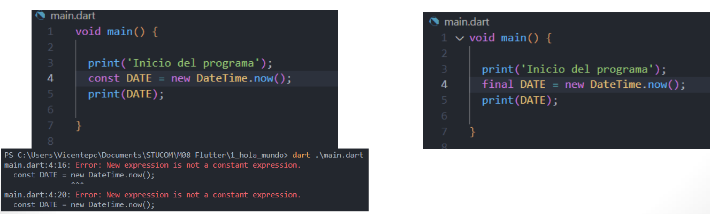

1. ¿Qué es Dart?
Dart es un lenguaje de programación creado por Google, de código abierto, basado en clases y enfocado a la creación de aplicaciones web, tanto en el cliente como en el servidor.
1.1. Objetivos de diseño de Dart
- Crear un lenguaje estructurado pero flexible para la programación web.
- Ofrecer un alto rendimiento en todos los navegadores web y entornos modernos, desde pequeños dispositivos de mano hasta la ejecución del lado del servidor.
1.2. Funciones y herramientas principales
- Tipos opcionales: No es necesario declarar los tipos de las variables.
- Fácil acceso al DOM: Usando selectores de CSS de manera similar a jQuery.
- Herramientas de IDE de Dart: Existen complementos de Dart para muchos IDE de uso común, por ejemplo, VSCode.
- Dartium: Una compilación del navegador web Chromium con una máquina virtual Dart incorporada.
2. Instalación de Dart
Puedes obtener el SDK oficial desde dart.dev/get-dart.
2.1. Instalación en Windows
Puedes utilizar Chocolatey para realizar la instalación del SDK y después utilizar los siguientes comandos:
# Para instalar el Dart SDK
C:\> choco install dart-sdk
# Para actualizar el Dart SDK
C:\> choco upgrade dart-sdk
2.2. Instalación en Mac
Puedes utilizar Homebrew para realizar la instalación del SDK. Una vez instalado Homebrew, ejecuta en la terminal:
$ brew tap dart-lang/dart
$ brew install dart
2.3. Instalación en Linux
Instalación usando apt-get haciendo una configuración previa de una sola vez:
$ sudo apt-get update
$ sudo apt-get install apt-transport-https
$ wget -qO- https://dl-ssl.google.com/linux/linux_signing_key.pub | sudo gpg --dearmor -o /usr/share/keyrings/dart.gpg
$ echo 'deb [signed-by=/usr/share/keyrings/dart.gpg arch=amd64] https://storage.googleapis.com/download.dartlang.org/linux/debian stable main' | sudo tee /etc/apt/sources.list.di/dart_stable.list
# Instalación final del SDK
$ sudo apt-get update
$ sudo apt-get install dart
2.4. Extensión en VSCode
- Instalar la extensión Dart (Dart language support and debugger) dentro de Visual Studio Code para habilitar el soporte de lenguaje y depuración.

3. Primer Programa: Hello World
Para crear el primer programa en Dart, abrimos VSCode y creamos un archivo main.dart en el directorio de trabajo.
void main() {
print("Hello World!");
}

Para ejecutar el programa lo hacemos mediante el terminal con el comando:
dart main.dart

4. Declaración de variables
4.1. Tipos primitivos en Dart
En Dart podemos utilizar los siguientes tipos de variables primitivas:
| Tipo | Descripción | Ejemplo de valor |
|---|---|---|
Null |
Representa la ausencia de valor | null |
int |
Números enteros | 30 |
double |
Números de coma flotante | 45.8 |
String |
Cadenas de texto | 'hola' |
List |
Listas o arreglos de datos | [1, 2, 3] |
Set |
Colecciones no ordenadas de ítems únicos | {'a', 'b'} |
Map |
Asociaciones de claves y valores | {'a': 'b', 'c': 'd'} |
Runes |
Puntos UNICODE de una cadena | Puntos específicos de caracteres |
Symbol |
Representa un operador o identificador | #radix |
4.2. Tipo var
Si declaramos una variable como var, Dart asignará el tipo que crea conveniente dependiendo del valor asignado. Una vez se asigna un valor a la variable ya no se podrá modificar su tipo.
var name = 'Paco'; // name será de tipo String de manera implícita
name = 98.5; // Error: A value of type 'double' can't be assigned to a variable of type 'String'
4.3. Declaración explícita
Para declarar una variable de forma explícita se indicará claramente el tipo de valor al inicio:
String name = 'Paco';
double height = 177.45;
int age = 25;
5. Características de Variables (Null Safety, Late, Const y Final)
5.1. NULL safety
En Dart no se pueden utilizar variables sin asignar previamente un valor. Esta acción provocará un error de compilación. Para evitar este error y permitir que una variable pueda ser nula, se utiliza el símbolo de interrogación ? después del tipo.
// Provoca error si se intenta usar sin asignar:
// String name;
String? name; // Con null safety se evita el error de asignación obligatoria

Importante: Con null safety se evita el error inicial, pero las variables que pueden ser NULL se tienen que tratar en el código, de lo contrario pueden aparecer errores de ejecución.

5.2. Late
Se puede utilizar la palabra clave late si hay una certeza de que a la variable se le asignará un valor definitivo antes de ser usada. Igual que con null safety, se tendrá que comprobar o asegurar que la variable tiene un valor antes de ser utilizada para evitar un error de ejecución.
late String description;
// ... en algún momento posterior antes de su uso:
description = "Introducción a Dart";
5.3. Const y Final
Si el valor de la variable no se tiene que modificar en el futuro, se podrá declarar como const o final:
- Const: La variable tiene que ser asignada antes de la ejecución, es decir, en el momento de la compilación.
- Final: La variable se puede calcular o definir dinámicamente después de la compilación.

6. Estructuras de control
6.1. Bucle For
El bucle for nos sirve para recorrer secuencias de valores. Podemos hacerlo usando un índice clásico o con la sintaxis for..in
// Opción 1: Recorrido con índice
const List colores = ['Red', 'Blue'];
for (int i = 0; i < colores.length; i++) {
print(colores[i]);
}
// Opción 2: Recorrido con sintaxis for..in
for (String color in colores) {
print(color);
}
6.2. Bucles While y Do...While
El bucle while nos sirve para recorrer secuencias a partir de una condición, evaluándola al inicio. Por otro lado, la estructura do...while ejecuta el bloque de código al menos una vez antes de evaluar la condición.
// Estructura While
while (condicion) {
// código a ejecutar
}
// Estructura Do...While
do {
// código a ejecutar
} while (condicion);
Resumen de Dart básico
- Dart es un lenguaje estructurado, de código abierto y desarrollado por Google para web y servidores.
- Permite tipado explícito e implícito mediante la palabra clave
var. - Incorpora Null Safety nativo mediante el operador
?para evitar errores de ejecución. - Ofrece
latepara inicializaciones tardías garantizadas. - Distingue entre valores inmutables en tiempo de compilación (
const) y de ejecución (final). - Soporta bucles de control estándar como
for,for..in,whileydo..while.